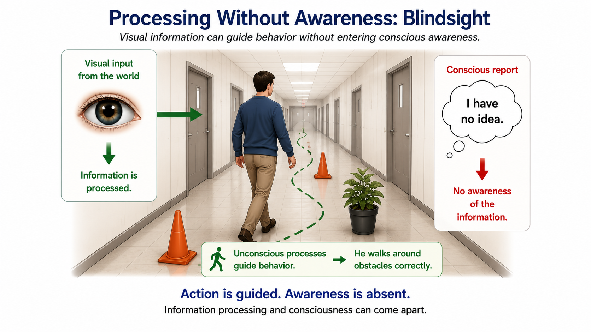
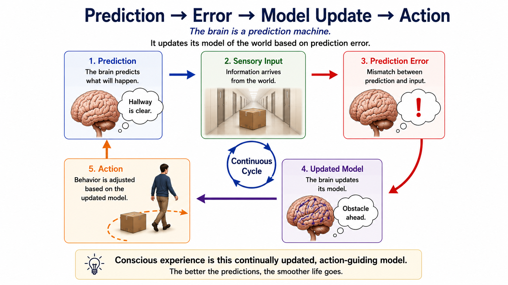
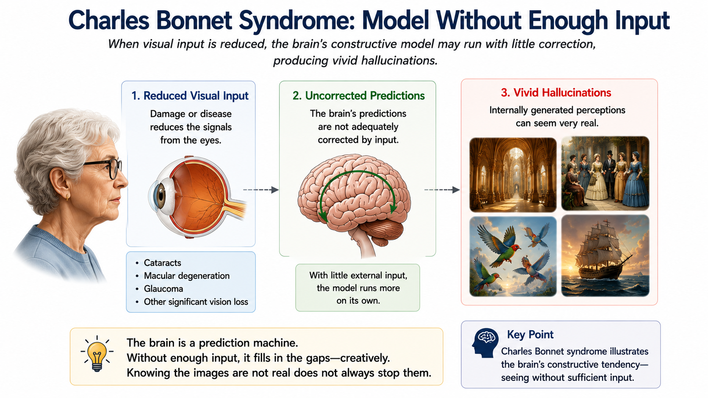

Consciousness — Processing, Experience, and Access
“If your brain processed something, you must have been conscious of it.”
Consider this case. A man with complete damage to his primary visual cortex—cortically blind, with no ordinary visual experience—was placed at one end of a long hallway. The hallway was full of obstacles: boxes, a filing cabinet, and a wastepaper bin placed at irregular intervals. He was told the hallway was empty. Encouraged to walk to the other end, he hesitated—he could see nothing, he said—but began to move. He reached the far end without a single collision, weaving around every obstacle as if he could see it. Asked afterward how he had managed it, he said he had no idea (de Gelder et al., 2008).
His brain was receiving and processing visual information. That information guided his body through a complex physical space. Yet he reported no ordinary experience of seeing the obstacles.
This is blindsight, and it breaks the assumption buried in the misconception above. Information processing and conscious experience are not identical. The interesting scientific question is no longer simply whether a person is “conscious.” We need to ask what kind of processing occurred, what the person experienced, and what information became available for report and flexible use.
{kind=link}

This chapter is about how researchers pull these processes apart.
Where This Fits
Chapter 4 established that perception is constructed rather than copied: sensory evidence interacts with prior knowledge, context, and the brain’s best current interpretation. This chapter asks which of those many processed signals become part of experience and which become available for report, reasoning, and flexible action. Chapter 6 will use the same distinctions to examine sleep, dreaming, responsiveness, and internally generated content. Chapter 8 will return to another separation that matters here: having an experience and storing a durable memory of it are different biological achievements.
Learning Objectives
- Use blindsight to explain why information processing and conscious visual experience are not identical.
- Apply the chapter’s state/content/access dashboard to cases in which dimensions of consciousness come apart.
- Explain how selective attention and automaticity influence access without treating attention as a single anatomical gate.
- Describe global-workspace theory as one candidate account of conscious access.
- Compare reports and no-report paradigms, including what cognitive motor dissociation teaches about responsiveness.
- Use predictive processing and Charles Bonnet syndrome to explain how conscious content can be constructed while remaining distinct from belief.
- Compare alcohol blackout, psychedelic states, and general anesthesia across state, content, behavior, access, and memory.
- Distinguish functional explanations of consciousness from Chalmers’s hard problem.
Section 1: Processing Is Not Experience
Three questions, not one dial
The word consciousness invites a bad mental picture: one master dimmer switch that turns the entire mind up or down. Blindsight shows why that picture fails. The patient was awake. Visual information changed his behavior. Ordinary visual experience was missing. One word cannot describe all three facts without becoming slippery.
For this chapter, we will use a three-question dashboard:
| Dimension | Question |
|---|---|
| Conscious state | What is the organism’s overall condition of wakefulness, responsiveness, and apparent capacity for experience? |
| Conscious content | What, if anything, is being experienced right now? |
| Conscious access | What information is available for report, reasoning, memory, evaluation, and flexible action? |
These are partly separable dimensions, not three settings on one mechanism. The dashboard is this chapter’s teaching synthesis, informed by multidimensional approaches that challenge the idea that every condition fits neatly on one ladder from “less conscious” to “more conscious” (Bayne, Hohwy, & Owen, 2016). It is not an official taxonomy on which all consciousness researchers have agreed. Its value is practical: it forces us to ask a better question.
Try the dashboard on an ordinary moment. You are awake in class, so your state supports a wide range of possible experiences. Your current content might include the instructor’s voice, the pressure of the chair, and a worry about an assignment. Yet only some of that content is being maintained and used. When you compare the instructor’s example with yesterday’s reading, information has gained the kind of access that supports reasoning and memory. A moment later, the pressure of the chair may become central content because you shift position. The dashboard describes a changing organization, not three boxes filled once and left alone.
Apply the dashboard: blindsight
Now apply the three questions to the hallway case. The patient’s conscious state appeared wakeful: he understood instructions, stood, walked, and answered questions. His conscious content did not include ordinary visual experience of the obstacles. Some visual information nevertheless influenced action, although it was not available as the kind of conscious access that would let him say, “There is a box in front of me, so I will step left.”
That last distinction matters. Information can control a specialized response without becoming broadly usable. You can describe the patient’s behavior accurately only after separating processing, content, and access.
This also prevents a common mistake: inferring experience directly from successful performance. Behavior is crucial evidence, but the same behavior can be produced through different routes. The hallway navigation tells us that visual processing survived. The patient’s report tells us that ordinary seeing did not. The dissociation is the discovery.
A blindsight patient turns around an obstacle while reporting that nothing is visible. Describe the case using conscious state, conscious content, and conscious access. Then name the processing that occurred outside ordinary visual experience.
What the dashboard does—and does not—claim
The dashboard does not turn three useful questions into three independent brain modules. State depends on interacting arousal and network systems. Content can include sights, sounds, pain, imagery, thoughts, and a sense of self. Access can support different uses in different tasks. The parts overlap because brains are coordinated systems.
Here is the working model we will build: the brain processes far more information than enters conscious experience. Attention influences which information gains wider access. Predictive systems help construct content. When selected information becomes accessible across more systems, it may be maintained, compared with goals, evaluated, described, and used to change an ongoing response. Those are substantial accomplishments. They still leave one question open: why any of this processing feels like something from the inside.
Section 2: What Reaches Conscious Access?
Automatic systems and broader use
If unconscious systems can guide behavior, what might conscious access contribute?
Think of an automatic camera with a manual override. The camera can manage focus, exposure, and white balance without a photographer choosing every setting. Automatic systems likewise perform substantial specialized processing: posture adjusts, familiar words are recognized, practiced movements unfold, and sensory signals guide action. The analogy earns its keep when the default response is no longer enough. Information may need to be maintained, compared with a goal, combined with information from another system, or used to interrupt what is already happening.
The “manual override” is not a tiny photographer inside your head. There is no internal observer who watches the brain’s screen and takes control. The point is functional: conscious access may allow selected information to be used more broadly and flexibly, but complex information processing also occurs outside awareness. Researchers therefore study possible functions in the plural rather than assuming that consciousness contributes one magic capacity to every task (Ludwig, 2022).
“Broader” does not mean that every brain system receives an identical copy. It means that information initially handled for one specialized purpose can become available to more kinds of use. A sudden road closure may need to be held in mind, compared with your destination, translated into a new route, and communicated to a passenger. Each of those operations has unconscious components. The candidate contribution of access is the coordination of selected information across the changing demands of the task.
One compact candidate account is global-workspace theory. Specialized systems process information locally and in parallel; selected information may become amplified and broadly available across a global neuronal workspace. That availability could support memory, evaluation, language, and flexible action (Mashour et al., 2020). This is a candidate explanation of access. It does not explain why globally available information feels like anything.
Attention and automaticity
Selective attention biases processing toward some information and away from other information. It is a family of selection processes, not one anatomical gate. Automaticity develops when practice allows a skill to run with less conscious monitoring. A pianist can adjust timing and force without verbally planning each finger movement. A driver can maintain lane position while discussing weekend plans. These behaviors remain sensitive to information; they simply do not require each component to occupy conscious access.
The automatic-camera analogy now has a clear limit. Skilled routines can be flexible, and deliberate thought can be clumsy. Conscious access is especially useful when information must be held available for a new combination or correction, but it is not the sole source of intelligence in the system.
Inattentional blindness makes selection visible. In the best-known demonstration, participants counted basketball passes while a person in a gorilla suit crossed the scene. Many participants did not report the gorilla (Simons & Chabris, 1999). Their eyes were open and the image reached the retina. The pass-counting task organized attention so strongly that the unexpected event often failed to gain reportable access.
Notice what this does not establish. A missing report does not prove that every feature of the gorilla received zero processing. The experiment shows that clearly visible input can fail to become available for report when attention is engaged elsewhere. Looking is not the same as accessing.
The cocktail-party effect is the possibility that personally important information—classically, your own name—captures attention even when it occurs in a conversation you are not following. Researchers often study it with dichotic listening, in which different spoken messages are presented to the two ears and the participant attends to only one. In a preregistered replication, 29 percent of listeners reported noticing their name in the unattended message (Röer & Cowan, 2021). The result shows that unattended information can sometimes capture attention. It does not give everyone a perfectly reliable name alarm.
You are following directions on an unfamiliar route when a passenger asks a complicated question. Which operations can remain automatic? Which information is likely to gain access? What might force the current response to be interrupted?
Methods Box: How Can Science Study a Private Experience?
Methods Box: How Can Science Study a Private Experience?
Reports are scientifically valuable evidence. If a participant says that a faint image appeared, that report gives researchers access to a fact they cannot observe directly. But producing the report adds several operations: the participant must attend to the instruction, decide which response fits, remember what the buttons mean, and move a finger or speak. Brain activity associated with those operations can be mistaken for activity associated with the experience itself.
A no-report paradigm tries to reduce some of that extra work. Researchers may infer a changing percept from eye movements, pupil responses, or another physiological or neural indicator instead of requiring a report on every trial (Tsuchiya et al., 2015). This can help separate activity linked to reporting from activity linked to the candidate experience. Yet the indicator remains an inference. A pupil response is not a direct reading of phenomenal experience (what the experience feels like from the inside). Report and no-report methods have different strengths, so consciousness research depends on triangulation across reports, behavior, physiology, and brain activity.
Cognitive motor dissociation shows why this caution matters clinically. In a large multicenter study, some patients who showed no observable response to spoken commands produced fMRI or EEG activity consistent with following commands through mental tasks (Bodien et al., 2024). This does not mean that every unresponsive patient is covertly conscious. It shows that observable responsiveness can underestimate preserved cognition in some cases.
An experience is what is occurring for the person. A report is an action used to communicate or indicate that experience. Reports are evidence; they are not the experience itself. No-report indicators also remain evidence, not a private-experience detector.
Diagnostic question: If a participant does not press the “seen” button, what possible failures besides “no experience occurred” must a careful researcher consider?
Section 3: How Conscious Content Is Constructed
Prediction and sensory evidence
Chapter 4 showed that perception is an active achievement. Incoming signals are noisy and incomplete, so the brain uses prior information and context to interpret them. In predictive processing, perceptual systems generate hypotheses about incoming input and revise those hypotheses when prediction and evidence diverge (Clark, 2013).
A simplified loop looks like this:
- prior information supports a prediction about incoming input;
- sensory evidence arrives;
- mismatch produces a prediction error;
- predictions, attention, or action change.
{kind=link}

The framework explains machinery that can shape content. It is not the definition of consciousness, and illusions or hallucinations do not uniquely prove it. Many constructive accounts expect perception to depend on both incoming signals and internal organization. The important bridge from Chapter 4 is narrower and stronger: what you experience is an interpretation, not a copy.
Charles Bonnet syndrome: seeing without believing
People with significant vision loss sometimes experience vivid visual hallucinations while retaining the belief that the images are not real. A person might see patterned walls, animals, faces, or a crowd in an empty room. This is Charles Bonnet syndrome. The clinical literature varies in its exact diagnostic criteria, but visual hallucination in the context of visual loss is central, and preserved insight is common (Hamedani & Pelak, 2019).
Reduced visual input leaves perceptual systems with weaker external constraint. Internally generated activity can then contribute more strongly to what is seen. That pattern is consistent with constructive and predictive accounts, although it does not uniquely prove one mechanism or one theory of consciousness.
The preserved insight is the real lesson here. Vivid conscious content can occur while explicit belief rejects that content. Knowing that the crowd is unreal does not necessarily make the crowd disappear. Seeing and believing are different achievements.
{kind=link}

A person sees a small dog sitting on an empty chair and calmly states that no dog is present. Use the dashboard. What content is present? What belief is present? Why would “the person is confused” be a poor summary?
Content is more than external input
Blindsight and Charles Bonnet syndrome point in opposite directions. In blindsight, external visual information guides action without ordinary visual content. In Charles Bonnet syndrome, vivid visual content appears despite weak or missing external input. Put the cases together and the lesson becomes difficult to miss: conscious content is neither a raw readout of stimulation nor a guarantee of accurate belief.
This is why attention and prediction occupy different places in the chapter’s model. Attention helps determine which information receives priority and wider access. Predictive processes help organize the content that is experienced. They interact, but they answer different questions.
Section 4: Consciousness Is Not One Dimmer Switch
Alcohol blackout: behavior without durable memory
An alcohol blackout is a period of alcohol-related amnesia during which a person may remain awake, interact, and perform complex behavior but later cannot retrieve some or all episodic memories from the period. A blackout is not the same as passing out. Passing out involves a major change in conscious state and responsiveness. A blackout primarily reveals a failure to form durable episodic memories while wakeful behavior continues (Wetherill & Fromme, 2016).
Fragmentary blackouts leave islands of memory that cues may help recover. En bloc blackouts involve a more continuous gap. In either form, later amnesia does not provide a complete recording of what the person consciously experienced at the time. That is exactly the point: behavior, momentary experience, and durable encoding do not have to rise and fall together.
This distinction reaches forward to Chapter 8. An experience can guide speech or action in the moment without becoming a lasting autobiographical memory. Memory is something the brain must build, not a residue that every experience automatically leaves behind.
During a blackout, a person may be awake and responsive while episodic encoding fails. When a person passes out, conscious state and voluntary responsiveness are substantially reduced. The same everyday phrase—“I was out”—can hide two different biological events.
Psychedelic states: changed content and self-experience
Classic psychedelics act strongly at cortical serotonin 5-HT2A receptors. Wakefulness often remains, while perceptual content, emotional meaning, time experience, and the ordinary sense of self may change. This makes psychedelic states useful here as a content-and-self case, not as a general chemical theory of consciousness.
One predictive-processing account proposes that psychedelics relax the precision of high-level priors, allowing bottom-up or previously suppressed signals to exert more influence (Carhart-Harris & Friston, 2019). Precision here means the weight assigned to a prediction or error signal, not confidence spoken aloud. This is one candidate account of psychedelic effects.
Relaxed priors do not guarantee more accurate perception, deeper truth, or therapeutic benefit. Dose, setting, expectation, learning history, and broader pharmacology still shape the experience. The useful dissociation is simpler: an organism can remain awake while ordinary perceptual content and self-experience change dramatically.
General anesthesia: responsiveness is not all processing
General anesthesia can alter conscious state, responsiveness, memory, sensory processing, and large-scale network coordination. Different drugs and doses produce these changes through different mechanisms, which is one reason anesthesia cannot be treated as a single on/off switch (Mashour, 2024).
Loss of responsiveness does not mean that every neural system has stopped processing information. In a 2026 study of seven anesthetized patients undergoing clinically indicated temporal-lobe surgery, direct hippocampal recordings retained information about unusual tones and—in four patients presented with a podcast—some semantic and grammatical properties of words (Katlowitz et al., 2026). The sample was small and clinically specialized. Neural representation is not the same as conscious comprehension or experience, so the finding is illustrative rather than load-bearing.
This is also why an anesthesiologist monitors several things rather than looking for one “consciousness number.” A patient’s movement, autonomic responses, brain activity, and later memory provide different evidence, and anesthetic drugs can affect those indicators differently. The clinical goal is a controlled condition appropriate to the procedure, not the discovery of one universal neural off switch.
That boundary matters in both directions. Residual neural activity should not be dismissed as “nothing,” but it should not be promoted into proof that the patient consciously understood a podcast. The study reinforces the chapter’s first lesson: substantial processing can remain when ordinary responsiveness and later memory are profoundly altered.
The cumulative dashboard
| Case | Conscious state | Conscious content | Access, behavior, or memory | Main dissociation |
|---|---|---|---|---|
| Blindsight | Awake and responsive | No ordinary seeing in the affected field | Visual information guides navigation without reportable vision | Processing from seeing |
| Inattentional blindness | Awake and responsive | Unexpected visible item often not reported | Task-relevant information dominates access | Visible input from access |
| Charles Bonnet syndrome | Awake | Vivid visual hallucination | Belief can reject the percept as unreal | Content from belief |
| Alcohol blackout | Often awake and behaviorally active | Experience cannot be reconstructed fully afterward | New episodic encoding is disrupted | Wakeful behavior from durable episodic encoding |
| Psychedelic state | Wakefulness often retained | Perception and self-experience may change | Behavior and evaluation vary with dose and context | Wakefulness from ordinary content |
| General anesthesia | State and responsiveness reduced in drug- and dose-dependent ways | Ordinary experience is reduced or absent under adequate anesthesia | Some sensory or semantic representation may persist without report or later memory | Behavioral responsiveness from residual neural processing |
Choose two rows that look superficially similar. Explain how the state/content/access dashboard reveals a different dissociation in each.
Closing: What Science Has Explained—and What Remains
Six separations, one cumulative model
The cases now form one argument. Blindsight separates processing from seeing. Inattentional blindness separates visible input from access. Charles Bonnet syndrome separates content from belief. Alcohol blackout separates ongoing behavior from durable memory. Psychedelic states separate wakefulness from ordinary content and self-experience. General anesthesia separates responsiveness from the claim that all neural processing has stopped.
These are real scientific accomplishments. Attention research explains how task demands prioritize information. Predictive processing explains how prior information and sensory evidence help construct content. Global-workspace proposals offer a candidate mechanism by which selected information becomes more broadly available. Report and no-report methods give researchers complementary ways to test those claims. The dashboard turns separate findings into a usable model.
It also changes how evidence is interpreted. A behavior can reveal preserved processing without settling what was experienced. A verbal report can reveal accessible content without identifying every mechanism that produced it. A neural pattern can represent information without proving that the information was consciously understood. Better questions produce better boundaries around each conclusion.
Science in Progress: Adversarial Collaboration
In 2025, the Cogitate Consortium reported a large adversarial collaboration comparing predictions from global neuronal workspace theory and integrated information theory. Proponents helped agree in advance on contrasting predictions, and a theory-neutral consortium tested them with several brain-imaging methods. Some findings fit parts of each account, while central predictions of both were challenged. There was no clean winner, and the study did not disprove every version of either theory (Cogitate Consortium et al., 2025). The deeper lesson is methodological: theories improve when their advocates commit to risky predictions before seeing the results.
The remaining explanatory gap
Functional explanations can tell us how information becomes available for report, how perception is constructed, how memories are encoded, and how selected information changes action. David Chalmers (1995) called the further question the hard problem of consciousness: why are any of those physical and computational processes accompanied by subjective experience? Why does seeing red feel like anything at all?
Not every researcher accepts Chalmers’s framing, and “hard” does not mean that the other problems are easy to solve. The distinction marks an explanatory boundary. A theory can explain access, report, perception, memory, and action while leaving phenomenal experience unanswered.
That is where the chapter lands. We can separate the organism’s state, the contents it experiences, and the information it can use. We can study mechanisms that shape each dimension. We do not yet know why the result feels like being someone.
Chapter Summary
The brain processes far more information than enters conscious experience. Blindsight makes that separation concrete: visual information can guide navigation without ordinary visual experience. This chapter uses conscious state, conscious content, and conscious access as a teaching dashboard informed by multidimensional research, not as a universally accepted three-part theory.
Selective attention prioritizes information, while automaticity allows practiced behavior to run with less conscious monitoring. The cocktail-party effect shows that unattended information can sometimes capture attention, although it does not do so reliably for everyone. Global-workspace theory proposes that selected information becomes amplified and broadly available to specialized systems. Reports provide valuable evidence about experience; no-report methods reduce some operations required by reporting but remain inferential. Cognitive motor dissociation shows that observable responsiveness can underestimate preserved cognition in some patients.
Predictive processing helps explain how prior information and sensory evidence construct conscious content. Charles Bonnet syndrome demonstrates that vivid visual content can coexist with the belief that the content is unreal. Alcohol blackout separates wakeful behavior from durable episodic encoding. Psychedelic states can preserve wakefulness while altering perceptual content and self-experience. General anesthesia changes state, responsiveness, memory, sensory processing, and network coordination without necessarily ending every local computation.
These functional explanations leave Chalmers’s hard problem unresolved. Explaining access, report, perception, memory, and action does not yet explain why those processes are accompanied by subjective experience.
Connections
| Concept from this chapter | Reappears in | Why it matters there |
|---|---|---|
| Constructed conscious content | Ch. 4 — Sensation & Perception (review) | Chapter 4 establishes that perception is constructed; this chapter separates that construction from access and belief |
| Conscious state, content, and responsiveness | Ch. 6 — Sleep | Sleep and dreaming provide additional cases in which responsiveness, external input, and internally generated content vary |
| Experience versus durable encoding | Ch. 8 — Memory | Alcohol blackout shows why an event that guides present behavior need not become a retrievable episodic memory |
| Automaticity and flexible access | Ch. 9 — Thinking, Language & Intelligence | Skilled routines and deliberate reasoning place different demands on maintaining and combining information |
| Reports, inference, and triangulation | Ch. 2 — Research Methods & Statistics | Consciousness research shows why a private construct must be measured with converging imperfect indicators |
| Altered self-experience and reality testing | Ch. 13 — Psychological Disorders & Therapy | Similar-sounding experiences can differ in insight, cause, context, and clinical significance |
Review Questions
1. A blindsight patient walks around a chair while reporting no visual experience of it. Which dashboard description is best?
Show answer & rationale
Answer: b. The case separates specialized visual processing that guides action from ordinary visual experience and reportable access.
2. Why does the chapter call state/content/access a dashboard rather than a theory with three official factors?
Show answer & rationale
Answer: a. The framework disciplines the questions students ask without claiming universal agreement on exactly three dimensions.
3. A practiced pianist corrects timing while thinking about dinner. Which conclusion best follows?
Show answer & rationale
Answer: b. Automaticity reduces the need to hold every component in conscious access while leaving the behavior responsive to relevant information.
4. What is global-workspace theory used to explain in this chapter?
Show answer & rationale
Answer: b. The theory is presented as one candidate account of access, not as a solution to phenomenal experience.
5. In a no-report study, a pupil response changes when a participant’s percept appears to switch. What is the strongest conclusion?
Show answer & rationale
Answer: b. No-report indicators can reduce some confounds, but they do not directly read private experience.
6. A behaviorally unresponsive patient produces an fMRI pattern consistent with following a mental-imagery command. What does cognitive motor dissociation establish?
Show answer & rationale
Answer: b. The neural response is evidence of command-related cognition in some patients; it does not justify a universal conclusion about every unresponsive patient.
7. A person with severe vision loss sees patterned figures and knows they are unreal. Which dissociation is most central?
Show answer & rationale
Answer: b. Charles Bonnet syndrome shows that vivid perceptual content can persist while belief rejects the content as unreal.
8. Why can later amnesia during an alcohol blackout not tell researchers exactly what was consciously experienced at the time?
Show answer & rationale
Answer: a. The person may remain awake and behaviorally active while durable encoding fails, so later memory loss is not a complete record of earlier experience.
9. Which comparison best distinguishes a psychedelic state from passing out?
Show answer & rationale
Answer: a. Psychedelics often alter content and self-experience without eliminating wakefulness; relaxed priors do not guarantee accuracy or benefit.
10. Hippocampal neurons represent some speech features under general anesthesia. What does that finding support?
Show answer & rationale
Answer: b. The small specialized study illustrates preserved processing while leaving conscious understanding unresolved.
11. The 2025 Cogitate adversarial collaboration is most useful as an example of:
Show answer & rationale
Answer: b. Some findings fit parts of each theory and central predictions of both were challenged; there was no clean winner.
12. Chalmers’s hard problem asks:
Show answer & rationale
Answer: b. Functional explanations can address access, report, perception, memory, and action while leaving the existence of felt experience unexplained.
Key Terms
- Alcohol blackout
- Alcohol-related amnesia for some or all events during a period in which a person may remain awake and behaviorally active.
- Automaticity
- The capacity for a practiced behavior to run with reduced conscious monitoring while remaining responsive to relevant information.
- Blindsight
- Visually guided responding in a cortically blind field without reported ordinary visual experience.
- Charles Bonnet syndrome
- Visual hallucinations associated with significant vision loss, commonly accompanied by insight that the images are unreal.
- Cocktail-party effect
- The capture of attention by personally important information, such as one’s name, in an unattended auditory stream.
- Cognitive motor dissociation
- Evidence of command-following cognitive activity on fMRI or EEG in a patient who shows no observable motor response to commands.
- Conscious access
- Availability of information for report, reasoning, memory, evaluation, and flexible action.
- Conscious content
- What is being experienced at a particular moment, such as a sight, sound, pain, thought, or image.
- Conscious state
- An organism’s overall condition of wakefulness, responsiveness, and apparent capacity for experience.
- Dichotic listening
- A procedure in which different auditory messages are presented to the two ears while the participant attends to one message.
- General anesthesia
- A drug-induced condition that alters conscious state, responsiveness, memory, sensory processing, and network coordination.
- Global-workspace theory
- A candidate account proposing that selected information becomes amplified and broadly available to specialized systems.
- Hard problem of consciousness
- Chalmers’s term for the question of why physical or computational processing is accompanied by subjective experience.
- Inattentional blindness
- Failure to report a visible object because attention is strongly engaged elsewhere.
- No-report paradigm
- A method that infers conscious content without requiring an explicit report on every trial, often using physiological, behavioral, or neural indicators.
- Phenomenal experience
- The subjective, felt quality of experience: what an experience is like from the inside.
- Prediction error
- A discrepancy between a prediction and incoming evidence that can drive updating, attention, or action.
- Predictive processing
- A framework in which perceptual systems combine prior information with sensory evidence to construct and revise hypotheses.
- Selective attention
- Processes that bias limited processing resources toward some information and away from other information.
Further Reading
Bayne, T., Hohwy, J., & Owen, A. M. (2016). Are there levels of consciousness? Trends in Cognitive Sciences, 20(6), 405–413.
A concise challenge to treating conscious conditions as positions on one simple ladder, and the research foundation for this chapter’s multidimensional dashboard.
Chalmers, D. J. (1995). Facing up to the problem of consciousness. Journal of Consciousness Studies, 2(3), 200–219.
The paper that introduced the hard-problem terminology. Read it as an influential philosophical argument, not as terminology accepted by every consciousness researcher.
Cogitate Consortium et al. (2025). Adversarial testing of global neuronal workspace and integrated information theories of consciousness. Nature, 642, 133–142.
A large preregistered theory comparison that demonstrates how scientific disagreement can be converted into shared tests and informative failures.
Mashour, G. A. (2024). Anesthesia and the neurobiology of consciousness. Neuron, 112(10), 1553–1567.
An authoritative review of how anesthesia changes sensory processing, arousal, and large-scale brain networks without acting as one uniform consciousness switch.
Tsuchiya, N., Wilke, M., Frässle, S., & Lamme, V. A. F. (2015). No-report paradigms: Extracting the true neural correlates of consciousness. Trends in Cognitive Sciences, 19(12), 757–770.
The foundational review behind the chapter’s distinction between an experience and the additional operations required to report it.
References
Full citations for factual claims made in this chapter. Further Reading above is curated separately for student exploration.
Bayne, T., Hohwy, J., & Owen, A. M. (2016). Are there levels of consciousness? Trends in Cognitive Sciences, 20(6), 405–413. https://doi.org/10.1016/j.tics.2016.03.009
Bodien, Y. G., Allanson, J., Cardone, P., et al. (2024). Cognitive motor dissociation in disorders of consciousness. New England Journal of Medicine, 391(7), 598–608. https://doi.org/10.1056/NEJMoa2400645
Carhart-Harris, R. L., & Friston, K. J. (2019). REBUS and the anarchic brain: Toward a unified model of the brain action of psychedelics. Pharmacological Reviews, 71(3), 316–344. https://doi.org/10.1124/pr.118.017160
Chalmers, D. J. (1995). Facing up to the problem of consciousness. Journal of Consciousness Studies, 2(3), 200–219.
Clark, A. (2013). Whatever next? Predictive brains, situated agents, and the future of cognitive science. Behavioral and Brain Sciences, 36(3), 181–204. https://doi.org/10.1017/S0140525X12000477
Cogitate Consortium, Ferrante, O., Gorska-Klimowska, U., et al. (2025). Adversarial testing of global neuronal workspace and integrated information theories of consciousness. Nature, 642, 133–142. https://doi.org/10.1038/s41586-025-08888-1
de Gelder, B., Tamietto, M., van Boxtel, G., Goebel, R., Sahraie, A., van den Stock, J., Stienen, B. M. C., Weiskrantz, L., & Pegna, A. (2008). Intact navigation skills after bilateral loss of striate cortex. Current Biology, 18(24), R1128–R1129. https://doi.org/10.1016/j.cub.2008.11.002
Hamedani, A. G., & Pelak, V. S. (2019). The Charles Bonnet syndrome: A systematic review of diagnostic criteria. Current Treatment Options in Neurology, 21(9), 41. https://doi.org/10.1007/s11940-019-0582-1
Katlowitz, K. A., Cole, E. R., Mickiewicz, E. A., et al. (2026). Plasticity and language in the anaesthetized human hippocampus. Nature, 654, 714–723. https://doi.org/10.1038/s41586-026-10448-0
Ludwig, D. (2022). The functional contributions of consciousness. Consciousness and Cognition, 104, 103383. https://doi.org/10.1016/j.concog.2022.103383
Mashour, G. A. (2024). Anesthesia and the neurobiology of consciousness. Neuron, 112(10), 1553–1567. https://doi.org/10.1016/j.neuron.2024.03.002
Mashour, G. A., Roelfsema, P., Changeux, J.-P., & Dehaene, S. (2020). Conscious processing and the global neuronal workspace hypothesis. Neuron, 105(5), 776–798. https://doi.org/10.1016/j.neuron.2020.01.026
Röer, J. P., & Cowan, N. (2021). A preregistered replication and extension of the cocktail party phenomenon: One’s name captures attention, unexpected words do not. Journal of Experimental Psychology: Learning, Memory, and Cognition, 47(2), 234–242. https://doi.org/10.1037/xlm0000874
Simons, D. J., & Chabris, C. F. (1999). Gorillas in our midst: Sustained inattentional blindness for dynamic events. Perception, 28(9), 1059–1074. https://doi.org/10.1068/p281059
Tsuchiya, N., Wilke, M., Frässle, S., & Lamme, V. A. F. (2015). No-report paradigms: Extracting the true neural correlates of consciousness. Trends in Cognitive Sciences, 19(12), 757–770. https://doi.org/10.1016/j.tics.2015.10.002
Wetherill, R. R., & Fromme, K. (2016). Alcohol-induced blackouts: A review of recent clinical research with practical implications and recommendations for future studies. Alcoholism: Clinical and Experimental Research, 40(5), 922–935. https://doi.org/10.1111/acer.13051